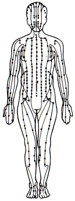

Acupuncture Meridians
- Most people are only familiar with the 12 Primary plus 2 of the Extraordinary Meridians.
- Those 14 Meridians all have their own unique acupuncture points.
- Other Meridians either have no points or "borrow" points from other Meridians.
- There are 72 Meridians in all.
12 Primary Meridians
- Internal and external pathways.
- 6 yin and 6 yangs.
- Bilaterally symmetrical.
- Circulation of qi and blood throughout is cyclical.
12 Divergent Meridians
- Named after and related to the Primary Meridians.
- Provide deeper connections in the body, to the organs, head, and face, and to the yang Meridians of each yin/yang pair.
12 Tendinomuscular Meridians
- Named after and related to the Primary Meridians.
- Broader areas than the Primary Meridians.
- Circulation of qi and blood to the muscles, tissues, joints, and the body surface.
12 Cutaneous Regions
- Named after and related to the Primary Meridians.
- Broader areas than the Primary Meridians.
- Circulation of qi and blood to the skin and tissues of the body surface.
- No internal distribution.
8 Extraordinary Meridians
- Distributed throughout body except in the upper extremities.
- Store qi and blood and distribute to the 12 Primary Meridians.
- Control and supplement the 12 Primary Meridians
- Only 2 of the Extraordinary Meridians have their own points.
- Du (Governing) Meridian—midline of the back of the body.
- Ren (Conception) Meridian—midline of the front of the body.
16 Major Luo (Collateral) Meridians
- 12 are named after and related to the 12 Primary Meridians.
- The Spleen and Stomach Meridians each have an extra Major Luo Meridian.
- 2 are named after and related to 2 of the Extraordinary Meridians: Du, Ren.
- Distribution is mainly to the surface of the body and between yin/yang paired Meridians.
- Many Small Luo Meridians.
- Minute, blood, grandson, and superficial.
- Yin Qiao and Yang Qiao Meridians.
- 2 of the 8 Extraordinary Meridians.
- They "borrow" Acupuncture points from other Meridians.